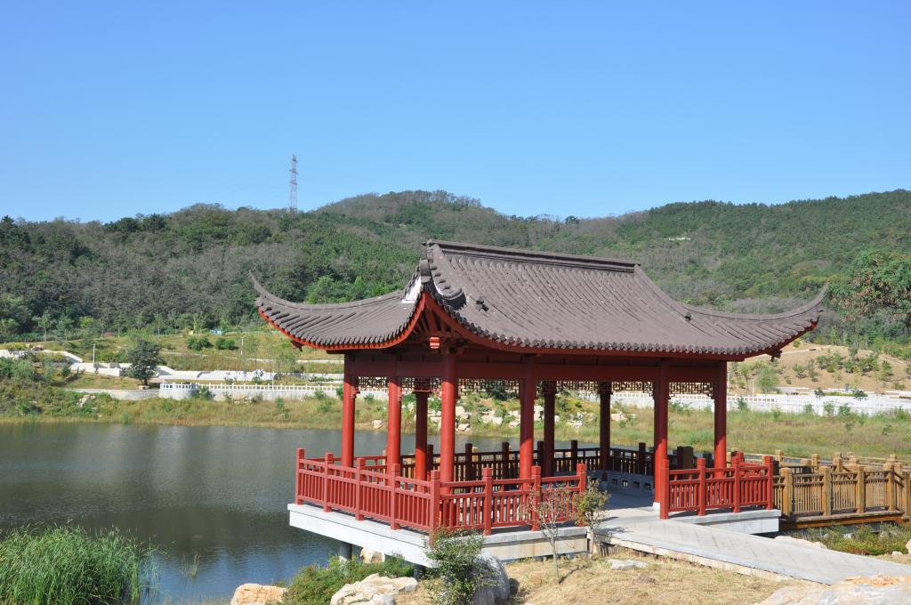
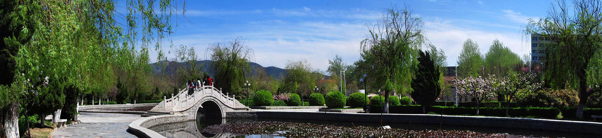
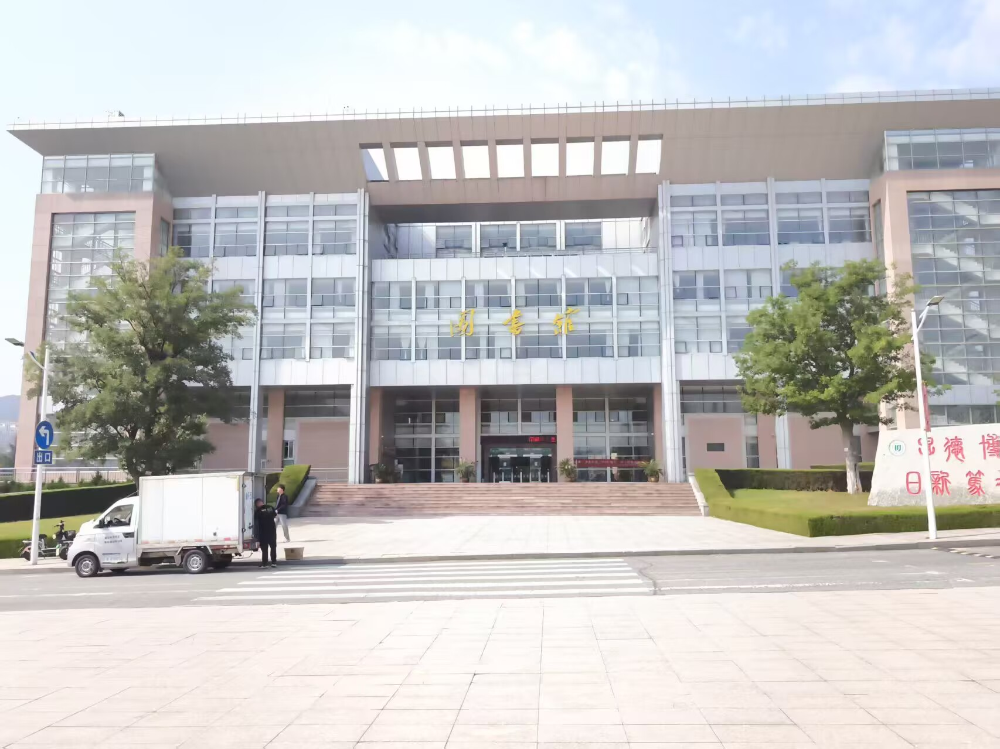
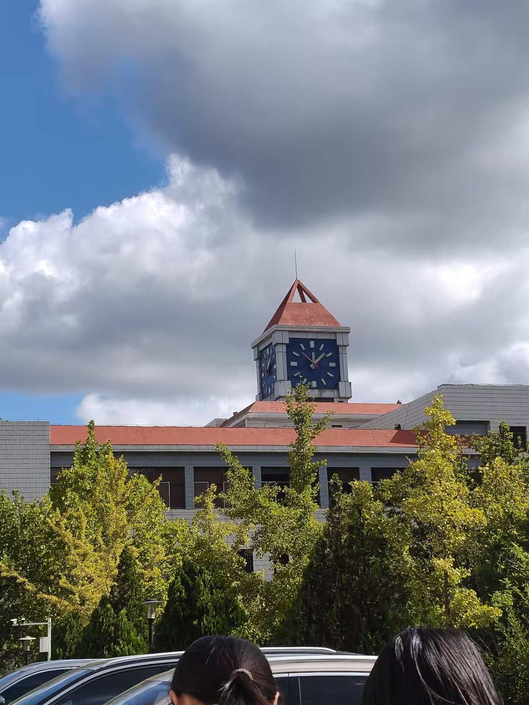

春日的鲁东大学校园处处生机盎然，一草一木都在春风中悄然苏醒。温暖的阳光洒在校园的林荫道上，道路两旁的树木抽出嫩绿的新芽，樱花、海棠、迎春花竞相开放，粉白相间、色彩明媚，把校园装扮得如诗如画。
乳子湖畔微风轻拂，湖水清澈明亮，岸边垂柳依依，枝条随风轻摆，倒映在碧波之中，格外清新雅致。春雨过后，校园空气格外清新，石板小路干净湿润，青草带着露珠，绿树焕发新颜。漫步在鲁大的校园里，处处是鸟语花香，处处是春意盎然，每一处风景都展现着春天的生机与活力，让人沉醉在这宁静又美好的校园春光里。
鲁东大学不仅风景优美，更有着深厚的人文底蕴和浓厚的学习氛围。教学楼里书声琅琅，图书馆内座无虚席，同学们在春光中认真学习、追逐梦想，处处洋溢着积极向上的气息。
校训石静立在新绿之间，“厚德、博学、日新、笃行” 八个大字在暖阳下熠熠生辉，与抽芽的草木相映，字字皆是风骨。镜心湖畔柳丝轻扬，碧波映着桥影，风过处泛起细碎涟漪，仿佛连时光都慢了下来。乳子湖畔的博物馆掩映在繁花与新叶之中，白墙黛瓦与湖光山色相融，静静诉说着岁月沉淀的文脉。校园里的校训石、文化长廊、校史馆等人文景观，在春日的映衬下更显庄重，默默传承着鲁大百年的文化精神与优良学风。师者谆谆教诲，学子勤学笃行，严谨的治学态度与温暖的校园氛围相融共生。春天的鲁大，既有自然之美，更有人文之韵，让我们在优美的环境中学习成长，在浓厚的文化氛围中砥砺前行。



